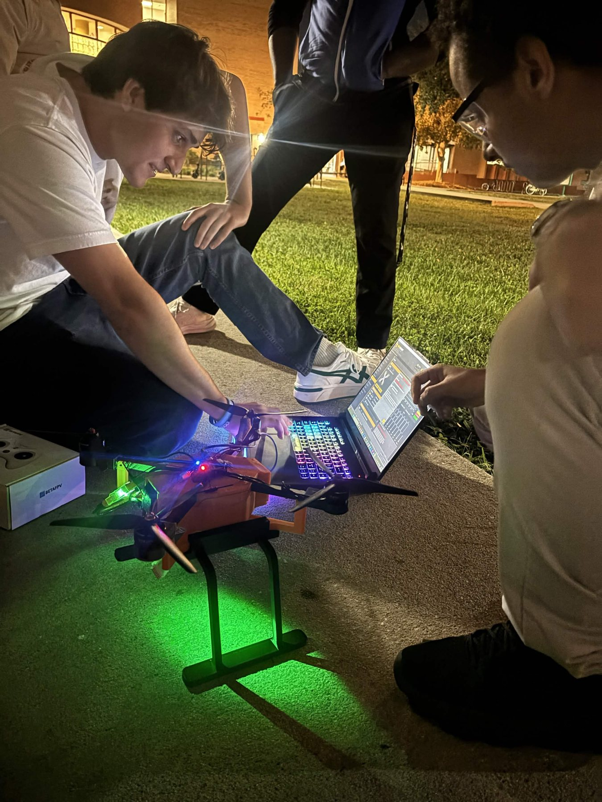
Project scope
BullsAID is a proof-of-concept emergency-response drone intended for disaster-relief and public-safety applications. I worked on both the project-management side and the mechanical side of the system.
As the project evolved, the airframe had to support a growing electronics stack: Raspberry Pi, flight controller, servos, camera, GPS, sensors, lights/speakers, power hardware, and the electromagnet payload system.
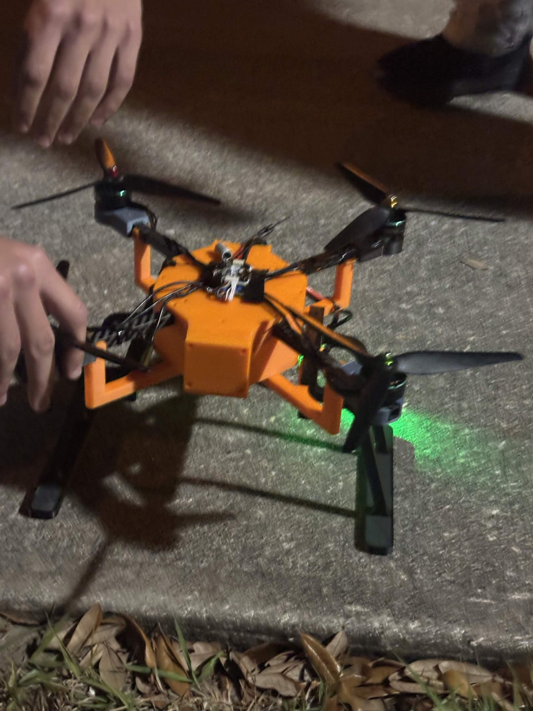
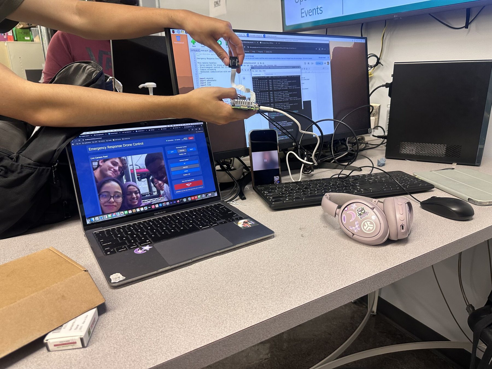
Leading the technical program
I coordinated four subteams: Software, Hardware, Airframe, and Fabrication. I created the Spring 2026 semester plan and kickoff materials so each team had a defined scope and shared integration milestones.
- Software: GUI responsiveness, remote connectivity, GPS, flight-controller telemetry, and groundwork for autonomy.
- Hardware: power distribution, electromagnet electronics, sensing, communications, and supporting hardware.
- Airframe: 2026 chassis, component packaging, camera mounting, cable routing, modularity, and structural requirements.
- Fabrication: fitment, frame validation, integration, fasteners, vibration resistance, and flight-readiness checks.
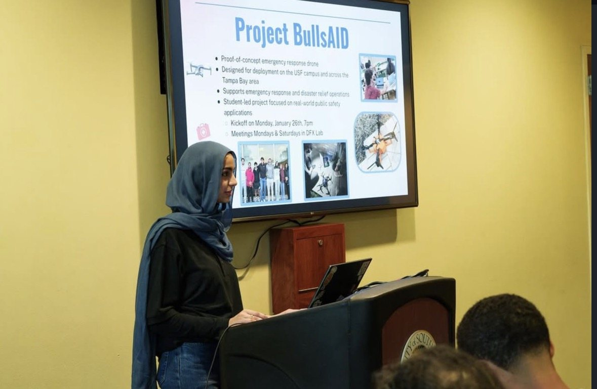
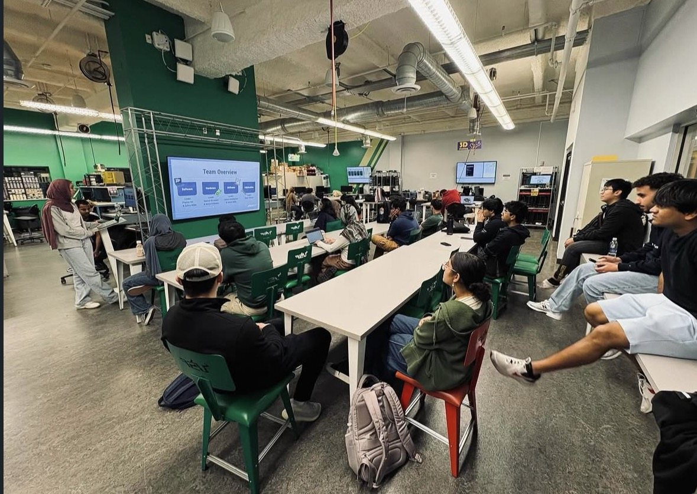
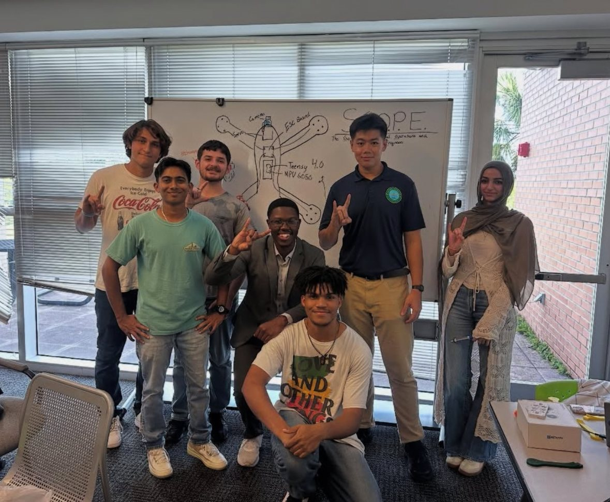
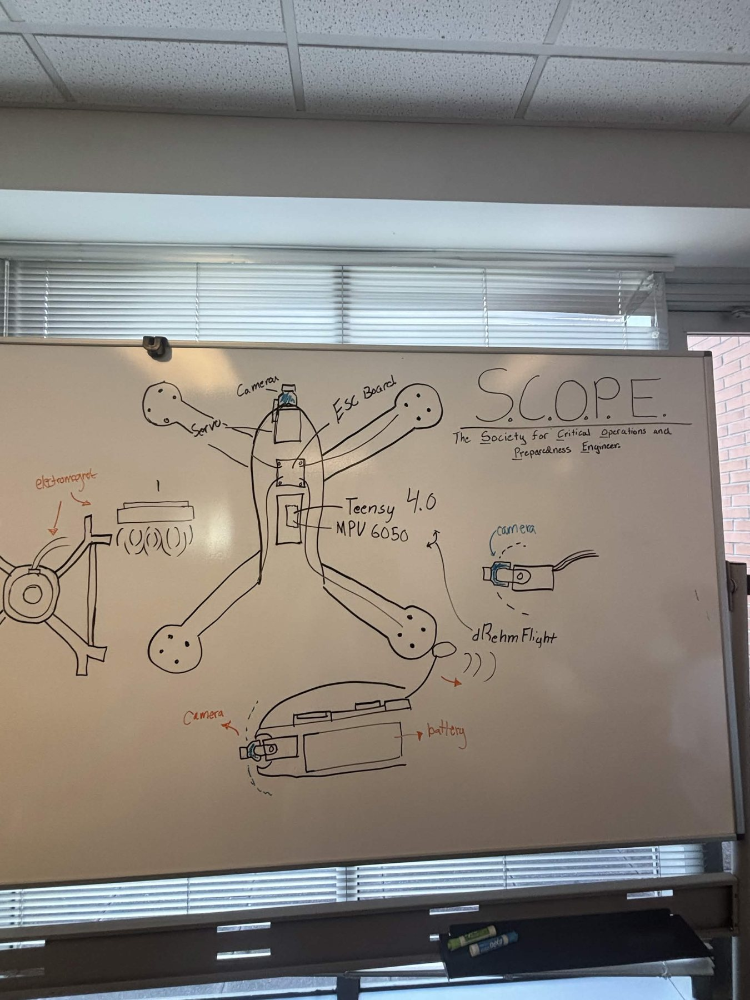
Mechanical design requirements
The mechanical redesign was driven by packaging and integration rather than by appearance. The airframe needed to house the complete system stack while remaining modular and serviceable.
- Place the battery and major electronics close to the center of gravity and keep thrust and mass distribution as balanced as practical.
- Provide mounting space for the Raspberry Pi, flight controller, camera, servos, sensors, and payload hardware.
- Protect wiring and leave clear routes for cables and future expansion.
- Maintain structural strength and vibration resistance while limiting added weight.
- Keep the design compatible with future autonomy hardware and external charging access.
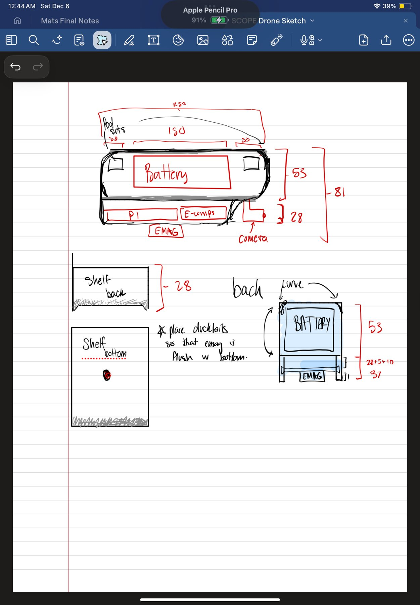
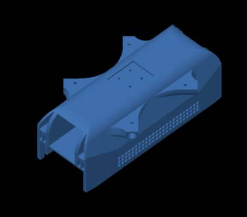
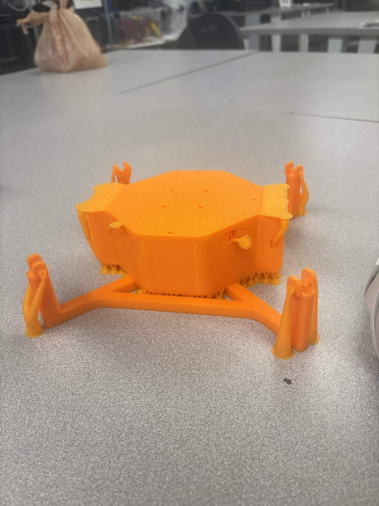
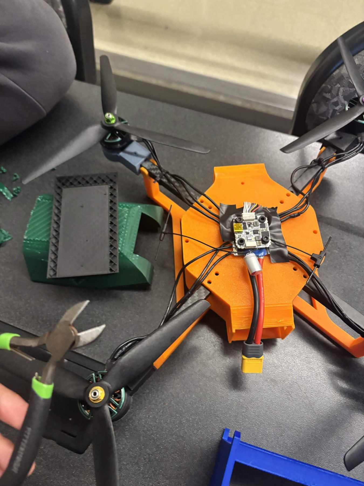
Material and manufacturing research
I compared candidate materials against weight, durability, heat resistance, manufacturability, and cost. The research included PLA, ABS, carbon-fiber PLA, nylon, PETG, carbon fiber, polycarbonate, PEEK, and titanium alloy.
The existing prototype used a mix of PLA, carbon-fiber arms, and carbon-fiber-reinforced nylon components. For future redesigns I also considered 3D printing, laser cutting, CNC machining, and molding. The final material choice was not locked at the time of this work.
Prototype integration and testing
The project moved through repeated physical integration sessions rather than a single final build. Team testing included hardware bring-up, software/GUI integration, flight-system preparation, and outdoor test sessions.
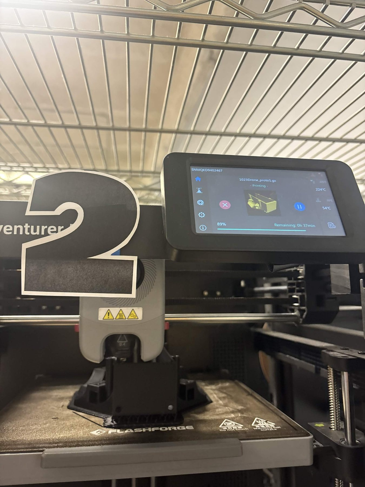
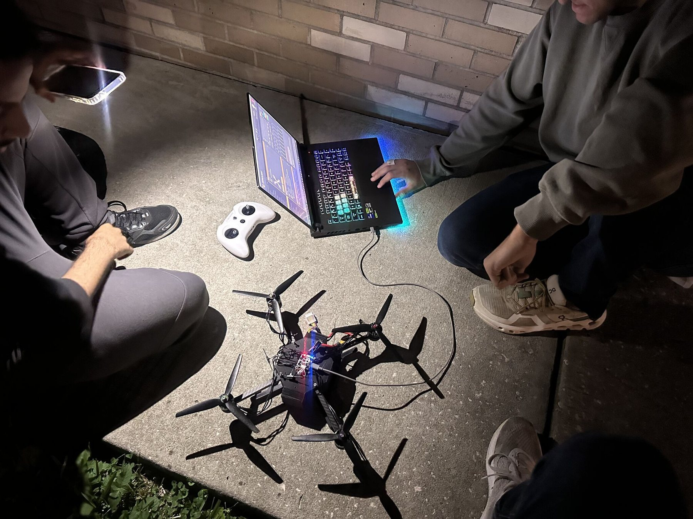